Amazon Web Services の
Amazon Web Services の
 Google Cloud
Google Cloud
 Microsoft Azure
Microsoft Azure
 ドキュメントの変更をリクエスト
ドキュメントの変更をリクエスト GitHub で編集
GitHub で編集 寄稿者向けガイド
寄稿者向けガイドONTAP システムのバックアップの管理
Cloud Volumes ONTAP システムとオンプレミス ONTAP システムのバックアップの管理では、バックアップスケジュールの変更、ボリュームのバックアップの有効化 / 無効化、バックアップの削除などを行うことができます。

|
バックアップファイルをクラウドプロバイダ環境から直接管理したり変更したりしないでください。ファイルが破損し、サポートされていない構成になる可能性があります。 |
バックアップしているボリュームを表示します
バックアップダッシュボードには、現在バックアップ中のすべてのボリュームのリストが表示されます。
-
Cloud Managerの左側のナビゲーションメニューで、* Backup & Restore *をクリックします。
-
[* Volumes] タブをクリックして、 Cloud Volumes ONTAP およびオンプレミス ONTAP システムのボリュームのリストを表示します。
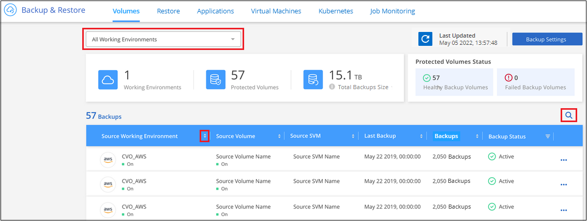
特定の作業環境で特定のボリュームを検索する場合は、作業環境とボリュームに基づいてリストを絞り込むか、検索フィルタを使用できます。
ボリュームのバックアップの有効化と無効化
ボリュームのバックアップコピーが不要で、バックアップの格納コストを抑える必要がない場合は、ボリュームのバックアップを停止できます。新しいボリュームがバックアップ中でない場合は、バックアップリストに追加することもできます。
-
[* Volumes （ボリューム） ] タブで、 [* Backup Settings （バックアップ設定） ] を選択します。
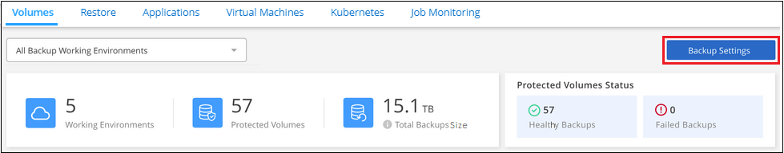 ボタンを示すスクリーンショット。"]
-
_ バックアップ設定ページ _ で、をクリックします
 アイコン"] 作業環境では、 * ボリュームの管理 * を選択します。
アイコン"] 作業環境では、 * ボリュームの管理 * を選択します。ページの [ ボリュームの管理 ] ボタンを示すスクリーンショット。"]
-
変更するボリュームのチェックボックスを選択し、ボリュームのバックアップを開始するか停止するかに応じて、 [Activate * （アクティブ化 * ） ] または [* Deactivate * （非アクティブ化 * ） ] をクリックします。
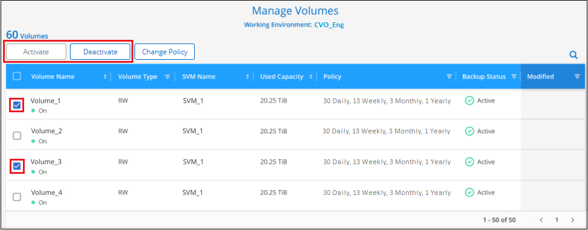
-
[ 保存（ Save ） ] をクリックして、変更をコミットします。
-
注意： * ボリュームのバックアップを停止すると、バックアップが停止します オブジェクトの料金はクラウドプロバイダが継続的に負担します を除いて、バックアップが使用する容量のストレージコスト あなた バックアップを削除します。
-
既存のバックアップポリシーを編集する
作業環境でボリュームに現在適用されているバックアップポリシーの属性を変更することができます。バックアップポリシーを変更すると、そのポリシーを使用している既存のすべてのボリュームが対象になります。
-
[* Volumes （ボリューム） ] タブで、 [* Backup Settings （バックアップ設定） ] を選択します。
-
[Backup Settings_] ページで、をクリックします
アイコン"] 設定を変更する作業環境で、 [ * ポリシーの管理 * ] を選択します。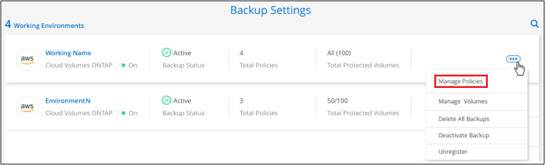 ページの [ ポリシーの管理 ] オプションを示すスクリーンショット。"]
-
[ ポリシーの管理 ] ページで、作業環境で変更するバックアップポリシーの [ ポリシーの編集 ] をクリックします。
-
[ ポリシーの編集 ] ページで、スケジュールとバックアップの保持を変更し、 [ 保存 ] をクリックします。
クラスタでONTAP 9.10.1以降が実行されている場合は、特定の日数が経過したバックアップをアーカイブストレージに階層化するかどうかを有効または無効にすることもできます。
+アーカイブストレージに階層化されたバックアップファイルは、アーカイブへのバックアップの階層化を停止した場合、その階層に残ります。これらのファイルは自動的に標準階層に戻されません。
新しいバックアップポリシーを追加しています
作業環境で Cloud Backup を有効にすると、最初に選択したすべてのボリュームが、定義したデフォルトのバックアップポリシーを使用してバックアップされます。Recovery Point Objective （ RPO ；目標復旧時点）が異なるボリュームに対して異なるバックアップポリシーを割り当てる場合は、そのクラスタに追加のポリシーを作成し、そのポリシーを他のボリュームに割り当てることができます。
作業環境内の特定のボリュームに新しいバックアップポリシーを適用する場合は、最初にそのバックアップポリシーを作業環境に追加する必要があります。すると その作業環境内のボリュームにポリシーを適用します。
-
[* Volumes （ボリューム） ] タブで、 [* Backup Settings （バックアップ設定） ] を選択します。
-
[Backup Settings_] ページで、をクリックします
アイコン"] 新しいポリシーを追加する作業環境で、 [ ポリシーの管理 ] を選択します。ページの [ ポリシーの管理 ] オプションを示すスクリーンショット。"]
-
[ ポリシーの管理 ] ページで、 [ 新しいポリシーの追加 ] をクリックします。
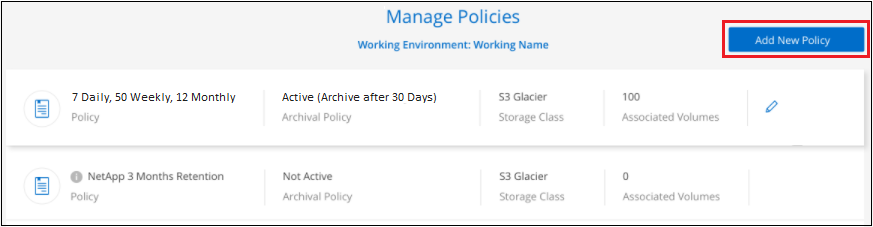 ページの [ 新しいポリシーの追加 ] ボタンを示すスクリーンショット。"]
-
[ 新しいポリシーの追加 ] ページで、スケジュールとバックアップの保持を定義し、 [ 保存 ] をクリックします。
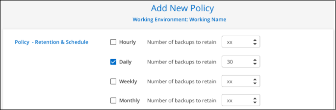
クラスタでONTAP 9.10.1以降が実行されている場合は、特定の日数が経過したバックアップをアーカイブストレージに階層化するかどうかを有効または無効にすることもできます。
[+]
既存のボリュームに割り当てられているポリシーを変更する
既存のボリュームに割り当てられているバックアップポリシーは、バックアップを作成する頻度を変更する場合や、保持期間を変更する場合に変更できます。
ボリュームに適用するポリシーがすでに存在している必要があります。 作業環境に新しいバックアップポリシーを追加する方法を参照してください。
-
[* Volumes （ボリューム） ] タブで、 [* Backup Settings （バックアップ設定） ] を選択します。
ボタンを示すスクリーンショット。"]
-
_ バックアップ設定ページ _ で、をクリックします
アイコン"] ボリュームが存在する作業環境で、 * ボリュームの管理 * を選択します。ページの [ ボリュームの管理 ] ボタンを示すスクリーンショット。"]
-
ポリシーを変更するボリュームのチェックボックスを選択し、 * ポリシーの変更 * をクリックします。
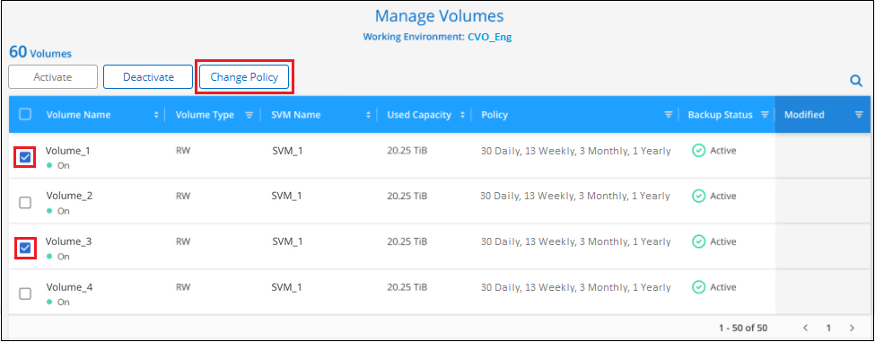
-
[Change Policy_] ページで、ボリュームに適用するポリシーを選択し、 [* ポリシーの変更 *] をクリックします。
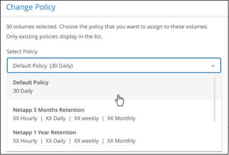
-
[ 保存（ Save ） ] をクリックして、変更をコミットします。
新しいボリュームに割り当てるバックアップポリシーの設定
ONTAP クラスタでクラウドバックアップを初めてアクティブ化したときに、新しく作成したボリュームにバックアップポリシーを自動的に割り当てるオプションを選択していない場合は、あとで_Backup Settings_pageでこのオプションを選択できます。新しく作成したボリュームにバックアップポリシーを割り当てると、すべてのデータを確実に保護できます。
ボリュームに適用するポリシーがすでに存在している必要があります。 作業環境に新しいバックアップポリシーを追加する方法を参照してください。
また、新しく作成したボリュームが自動的にバックアップされないようにするには、この設定を無効にします。その場合は、後でバックアップする特定のボリュームのバックアップを手動で有効にする必要があります。
-
[* Volumes （ボリューム） ] タブで、 [* Backup Settings （バックアップ設定） ] を選択します。
ボタンを示すスクリーンショット。"]
-
_ バックアップ設定ページ _ で、をクリックします
アイコン"] ボリュームが存在する作業環境で、*自動バックアップ新規ボリューム*を選択します。ページで[新しいボリュームの自動バックアップ]オプションを選択したスクリーンショット。"]
-
「新しいボリュームを自動的にバックアップ…」チェックボックスをオンにし、新しいボリュームに適用するバックアップポリシーを選択して、「保存」をクリックします。
このバックアップポリシーは、Cloud Manager、System Manager、またはONTAP CLIを使用して、この作業環境で作成した新しいボリュームに適用されます。
ボリュームの手動バックアップをいつでも作成できます
オンデマンドバックアップはいつでも作成することができ、ボリュームの現在の状態をキャプチャすることができます。これは、ボリュームに非常に重要な変更が行われたために、次回のスケジュールされたバックアップでそのデータが保護されるのを待たずに、現在バックアップ中ではなく現在の状態をキャプチャする場合に便利です。
バックアップ名にはタイムスタンプが含まれるため、他のスケジュールされたバックアップからオンデマンドバックアップを特定できます。
アドホックバックアップを作成する場合、ソースボリューム上にSnapshotが作成されることに注意してください。このSnapshotは通常のSnapshotスケジュールの一部ではないため、offのままになりません。バックアップの完了後に、このSnapshotをソースボリュームから手動で削除できます。これにより、このSnapshotに関連するブロックが解放されます。スナップショットの名前は’CBS-snapshot-adhoc -で始まります "ONTAP CLIを使用してSnapshotを削除する方法を参照してください"。

|
オンデマンドボリュームバックアップは、データ保護ボリュームではサポートされません。 |
-
[* Volumes （ボリューム） ] タブで、をクリックします
アイコン"] ボリュームの場合は、 * 今すぐバックアップ * を選択します。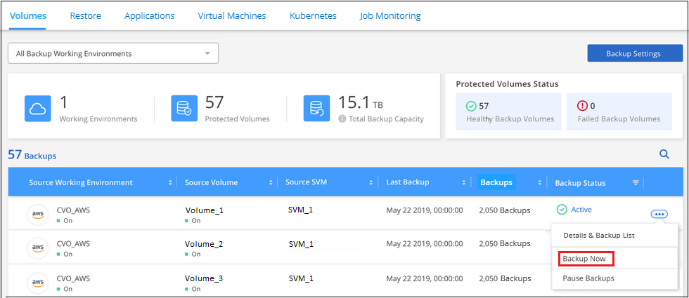 ボタンのスクリーンショット。"]
バックアップが作成されるまで、このボリュームの Backup Status 列には「 In Progress 」と表示されます。
各ボリュームのバックアップリストを表示します
各ボリュームに存在するすべてのバックアップファイルのリストを表示できます。このページには、ソースボリューム、デスティネーションの場所、および前回作成されたバックアップの詳細、現在のバックアップポリシー、バックアップファイルのサイズなどのバックアップの詳細が表示されます。
このページでは、次のタスクも実行できます。
-
ボリュームのすべてのバックアップファイルを削除します
-
ボリュームの個々のバックアップファイルを削除する
-
ボリュームのバックアップレポートをダウンロードします
-
[* Volumes （ボリューム） ] タブで、をクリックします
アイコン"] をソースボリュームとして選択し、 * Details & Backup List * を選択します。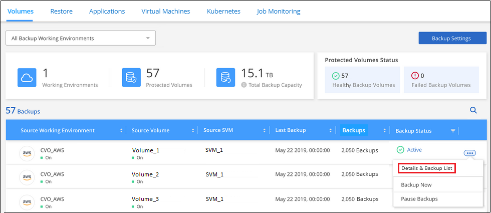 ボタンを示すスクリーンショット"]
すべてのバックアップファイルのリストが、ソースボリューム、デスティネーションの場所、およびバックアップの詳細とともに表示されます。
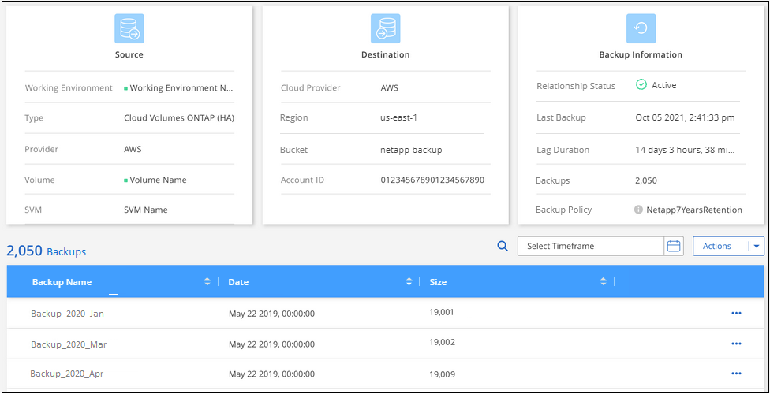
バックアップを削除する
Cloud Backup では、 1 つのバックアップファイルを削除したり、ボリュームのすべてのバックアップを削除したり、作業環境内のすべてのボリュームのすべてのバックアップを削除したりできます。すべてのバックアップを削除するのは、不要になった場合やソースボリュームを削除したあとにすべてのバックアップを削除する場合などです。
|
|
バックアップがある作業環境またはクラスタを削除する場合は、システムを削除する前に * バックアップを削除する必要があります。システムを削除しても、 Cloud Backup はバックアップを自動的に削除しません。また、システムを削除した後でバックアップを削除するための UI で現在サポートされていません。残りのバックアップについては、引き続きオブジェクトストレージのコストが発生します。 |
作業環境のすべてのバックアップファイルを削除する
作業環境のすべてのバックアップを削除しても、この作業環境のボリュームの以降のバックアップは無効になりません。作業環境ですべてのボリュームのバックアップの作成を停止するには、バックアップを非アクティブ化します ここで説明するようにします。
-
[* Volumes （ボリューム） ] タブで、 [* Backup Settings （バックアップ設定） ] を選択します。
ボタンを示すスクリーンショット。"]
-
をクリックします
アイコン"] すべてのバックアップを削除する作業環境で、 * すべてのバックアップを削除 * を選択します。ボタンを選択したスクリーンショット。"]
-
確認ダイアログボックスで、作業環境の名前を入力し、 * 削除 * をクリックする。
ボリュームのすべてのバックアップファイルを削除する
ボリュームのすべてのバックアップを削除すると、そのボリュームの以降のバックアップも無効になります。
可能です ボリュームのバックアップの作成を再開します ［ Manage Backups （バックアップの管理） ］ ページからいつでもアクセスできます。
-
[* Volumes （ボリューム） ] タブで、をクリックします
アイコン"] をソースボリュームとして選択し、 * Details & Backup List * を選択します。ボタンを示すスクリーンショット"]
すべてのバックアップファイルのリストが表示されます。
-
[ * アクション * > * すべてのバックアップを削除 * ] をクリックします。
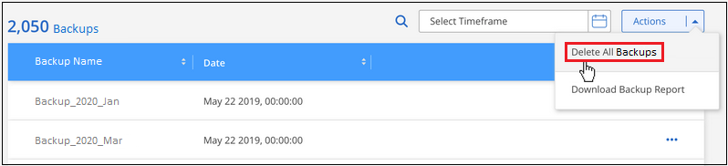
-
確認ダイアログボックスで、ボリューム名を入力し、 * 削除 * をクリックします。
ボリュームの単一のバックアップファイルを削除する
バックアップファイルは 1 つだけ削除できます。この機能は、 ONTAP 9.8 以降のシステムでボリューム・バックアップを作成した場合にのみ使用できます。
-
[* Volumes （ボリューム） ] タブで、をクリックします
アイコン"] をソースボリュームとして選択し、 * Details & Backup List * を選択します。ボタンを示すスクリーンショット"]
すべてのバックアップファイルのリストが表示されます。
-
をクリックします
アイコン"] 削除するボリュームバックアップファイルに対して、 * 削除 * をクリックします。 -
確認ダイアログボックスで、 * 削除 * をクリックします。
作業環境での Cloud Backup の無効化
作業環境で Cloud Backup を無効にすると、システム上の各ボリュームのバックアップが無効になり、ボリュームをリストアすることもできなくなります。既存のバックアップは削除されません。この作業環境からバックアップ・サービスの登録を解除することはありません。基本的には、すべてのバックアップおよびリストア処理を一定期間停止できます。
クラウドから引き続き課金されます が提供する容量のオブジェクトストレージコストのプロバイダ バックアップは自分以外で使用します バックアップを削除します。
-
[* Volumes （ボリューム） ] タブで、 [* Backup Settings （バックアップ設定） ] を選択します。
ボタンを示すスクリーンショット。"]
-
_ バックアップ設定ページ _ で、をクリックします
アイコン"] バックアップを無効にする作業環境で、 * バックアップを非アクティブ化 * を選択します。 -
確認ダイアログボックスで、 * Deactivate * をクリックします。
|
|
バックアップが無効になっている間は、その作業環境に対して * バックアップのアクティブ化 * ボタンが表示されます。このボタンは、作業環境でバックアップ機能を再度有効にする場合にクリックします。 |
作業環境のための Cloud Backup の登録を解除しています
バックアップ機能が不要になり、作業環境でバックアップの課金を停止する場合は、作業環境で Cloud Backup の登録を解除できます。通常、この機能は、作業環境を削除する予定で、バックアップサービスをキャンセルする場合に使用します。
この機能は、クラスタバックアップの格納先のオブジェクトストアを変更する場合にも使用できます。作業環境で Cloud Backup の登録を解除したら、新しいクラウドプロバイダ情報を使用してそのクラスタで Cloud Backup を有効にできます。
Cloud Backup の登録を解除する前に、次の手順をこの順序で実行する必要があります。
-
作業環境の Cloud Backup を非アクティブ化します
-
その作業環境のバックアップをすべて削除します
登録解除オプションは、これら 2 つの操作が完了するまで使用できません。
-
[* Volumes （ボリューム） ] タブで、 [* Backup Settings （バックアップ設定） ] を選択します。
ボタンを示すスクリーンショット。"]
-
_ バックアップ設定ページ _ で、をクリックします
アイコン"] バックアップ・サービスの登録を解除する作業環境では、 * 登録解除 * を選択します。 -
確認ダイアログボックスで、 * 登録解除 * をクリックします。